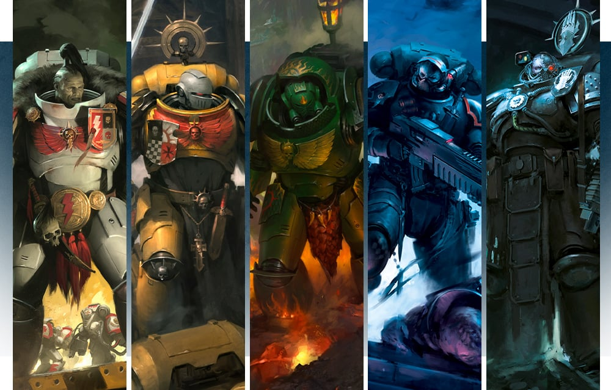
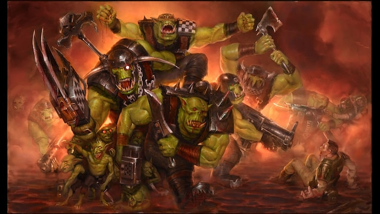
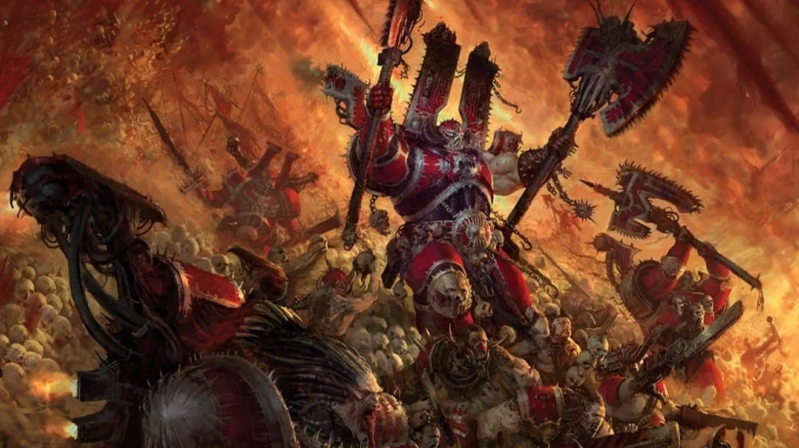
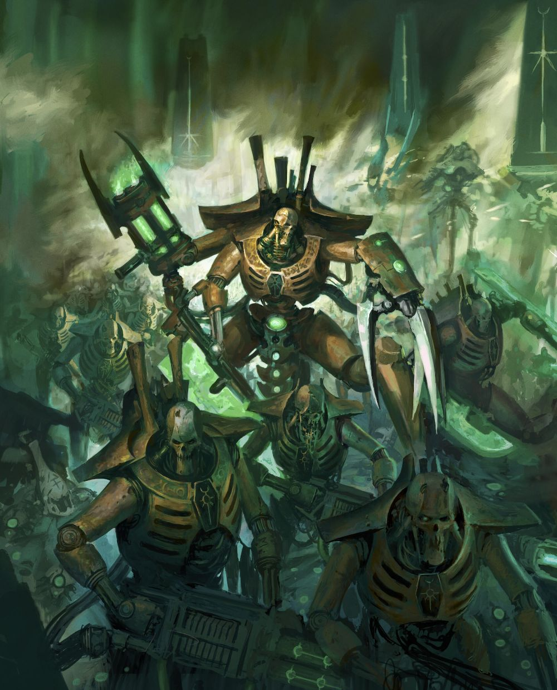
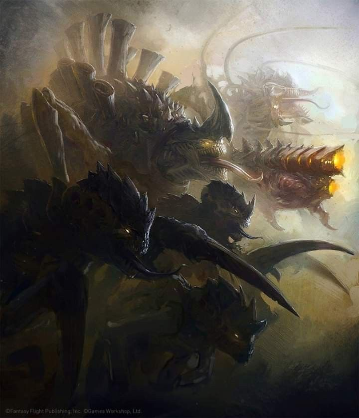
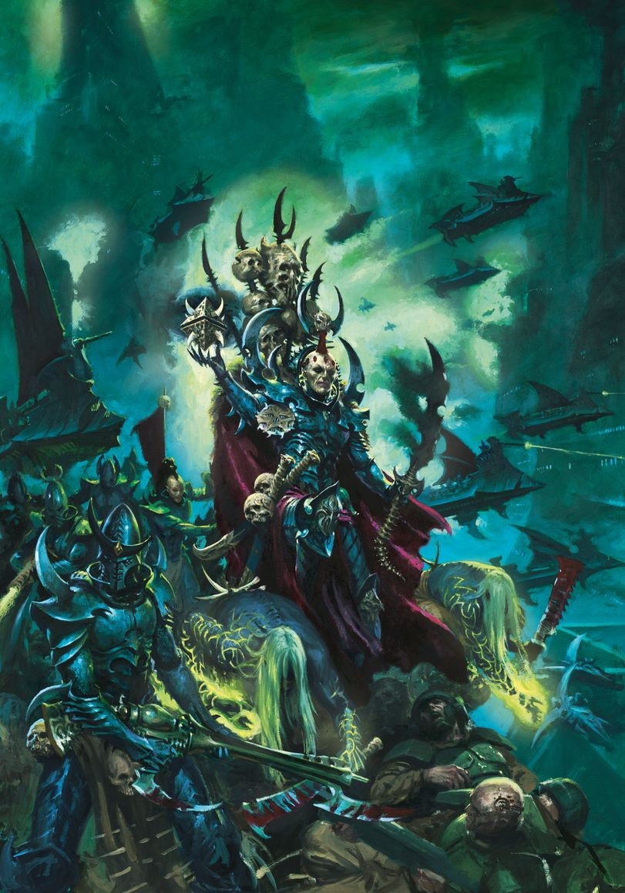

Space Marines — елітні генетично покращені суперсолдати Імперіуму. Вони носять силову броню, володіють надлюдською силою та ведуть нескінченну війну за Імператора.

Orks — зеленошкірі воїни, які живуть лише заради битв та хаосу. Вони створюють грубу, але дуже потужну зброю і постійно шукають нових ворогів.

Chaos — сили Warp та темних богів. Chaos Space Marines — колишні воїни Імперіуму, які зрадили Імператора та перейшли на бік темряви.

Necrons — древня раса безсмертних механічних воїнів. Вони прокинулися після мільйонів років сну та прагнуть повернути контроль над галактикою.

Tyranids — жахлива біологічна раса монстрів з іншої галактики. Вони поглинають усе живе та залишають після себе лише мертві світи.

Eldar — древня високорозвинена цивілізація з потужними технологіями та псайкерськими здібностями. Вони намагаються вижити серед нескінченних війн галактики.